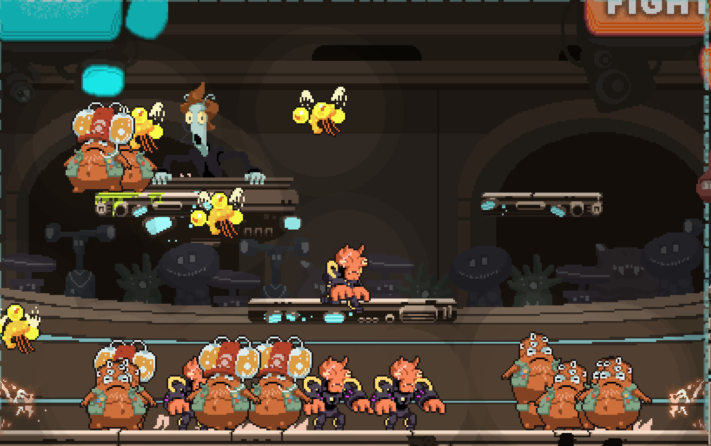

XENOPUNCH ★
Winner of Ludum Dare 37 out of 2400+ games
Overboy @Overboy, Youtube
Florent Juchniewicz @flojuch
Joe Rogers @jrrogersart
Made in 3 days for Ludum Dare 37, Theme was "One Room"
----------- XENOPUNCH -- INSTRUCTIONS -------------------------------------------
- Q : Quick dash
- W : Punch
- E (unlockable) : Lazer
- R (unlockable) : MULTIPLE IMPACT
- Arrows : movement
- You can also double jump, climb energetic walls and fall through platforms
You must ask permission if you want to upload this game on your own website. contact : overboy.games@gmail.com
I'm available for freelance work More info here
| Status | Released |
| Platforms | Windows, macOS, Linux, HTML5 |
| Rating | Rated 4.5 out of 5 stars (112 total ratings) |
| Author | OVERBOY ツ |
| Genre | Action, Adventure, Platformer, Simulation, Survival |
| Made with | Construct |
| Tags | 16-bit, 2D, Ludum Dare, Pixel Art, Roguelike, Singleplayer |
| Links | Ludum Dare |
Download
Download NowName your own price
Click download now to get access to the following files:
Xenopunch WIN64.zip 60 MB
Xenopunch OSX64 MAC.zip 68 MB
Xenopunch LINUX64.zip 61 MB
Comments
Log in with itch.io to leave a comment.
one of the bountwins hunters froze
i went through the floor
i did it again :(
I love the game, and I enyojed it, however i don't like the arrangment of the controlers
This game is amazing but there is one glitch tho: I jumped in the air and pressed "r" and my character jumped off the screen
It happened with me too.
Hoho, dude, this actually so cool ! I love this game !
I ended up cheesing the first boss by somehow getting the purple dude stuck in the wall.
the r move keeps on making me dissappear ;(
Same
Aight, to avoid this just use the ability on the middle platform.
I got through most of the game with button mashing.
Great game!
Awesome!
although i do seem to have a habit of butchering your coding and accidentally destroying the game...
sorry :)
Pretty nice, fast-paced action game! Found one bug at some point. When fighting the twins somehow the pink one got stuck behind the left wall of the screen, was able to kill him, but the purple one stuck to the wall and did not move anymore. Also could not kill him.
same
You should've said 'ditto', or did you deliberately make it less obvious? ;)
Great game! The plot twist was spooky o_o
what plot twist?
Great game there's one glitch so far that I found, when I multiple impact/the R move I disappeared. The music and the sprites are great. The controls took some time to get used to because i'm used to using WASD as movement but still great game :).
Nice quick game. The polish is outstanding. The background with the floating commentator is my favorite part!
is this a rick and morty refrence
when i used my R move on the second boss my charecter dissappeared and i had to restart the game still a load of fun tho
good game
Le he dado tan fuerte, que mi personaje ha desaparecido. La pantalla se está llenando de aliens
Please make an endless mode, that was so much fun!
Like most of your games, easy,simple, and utterly FUN AND AWESOME
INTENSE!
très bon jeu bien rythmé, pas trop compliqué à prendre en main, définitivement un de mes préférés.
j'ai remarqué que le côté gauche de l'arène est facilement penetrable. j'ai en effet fait passer plusieurs monstres à travers, notamment un des bountyhunters, ce qui les a totalement paralysés.
il s'est passé la meme chose avec mon personnage
the final boss and i died at the same time and another battle boss started when the credits appeared. Anyways this game is fire
Very cool game! I like it a lot! How to enable full screen mode in Windows build?
This game is really fun I just wish there was a 32 bit versio for download
this game is fire, just wished there was an option for endless modes
Your one of the best game devs on itch.io
swear he makes the best games
Great game. Intense action, high polish and style. I found a bug during Darth Mic fight, I used the R ability and my character disappeared from screen, but as it's a jam game, it's ok.
that's a bug when u do it anywhere, you need to use r when ur in the middle of the map
Fast Paced game so enjoyed it very much
So inspirational!
They type of game I hope to make for me and my friends one day soon! :D
A great and fun game . We enjoyed it very much.
Loved the retro art style.
Here is a short video we made while playing:
Keep up the good work!!!